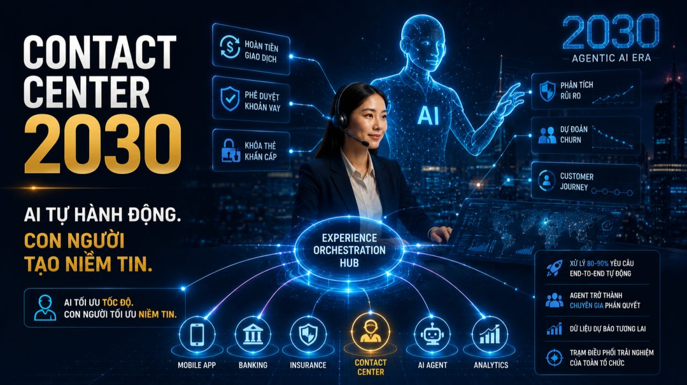
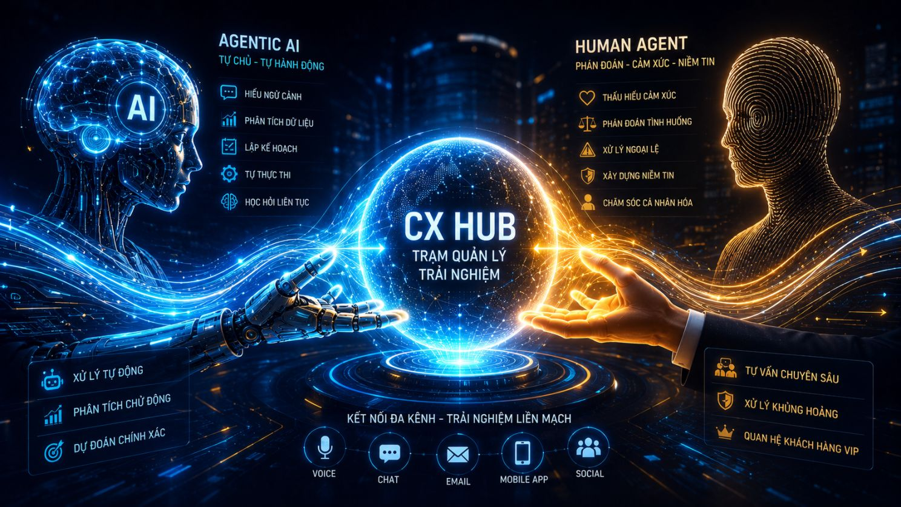

Trang chủ › Blog › Contact Center Insights · Mùa 1
Dữ liệu, AI và tương lai
Tương lai của Contact Center

Suốt 22 kỳ của series này, chúng ta đã đi qua toàn bộ bức tranh Contact Center hiện tại:
Từ sự khác biệt giữa Call Center và Contact Center. Đến KPI, CRM, Omnichannel, Speech Analytics, AI, Revenue Center, và cả những lý do thực sự khiến dự án thất bại. Bài #23 này hãy cùng nhìn về phía trước. Contact Center của ngành BFSI sẽ trông như thế nào trong 5–10 năm tới?
Và có một khái niệm đang nổi lên mạnh mẽ nhất trong giới công nghệ toàn cầu năm 2025-2026 thứ sẽ định hình lại toàn bộ ngành Contact Center: Agentic AI.
Contact Center đang ở đâu trên hành trình chuyển đổi?
Nhìn lại 4 thế hệ:
- 📞 Gen 1: Call Center truyền thống: Một phòng lớn. Người người đeo tai nghe. Xử lý cuộc gọi đến. Ghi chú thủ công.
- 🌐 Gen 2: Omnichannel Contact Center: Hợp nhất đa kênh hotline, chat, email, Zalo. CRM tích hợp. Dữ liệu bắt đầu được khai thác.
- 🤖 Gen 3: AI-Assisted Contact Center (hiện tại): Chatbot, Voicebot, Agent Assist, Speech Analytics. AI hỗ trợ con người. Con người vẫn là trung tâm.
- ⚡ Gen 4: Agentic AI Contact Center (đang đến): AI không chỉ hỗ trợ AI tự chủ động hành động.
Anh/chị đang ở thế hệ nào và thế hệ tiếp theo đang đến nhanh hơn nhiều người nghĩ.
Agentic AI là gì và tại sao nó thay đổi tất cả?
Nhiều doanh nghiệp BFSI hiện nay đang dừng lại ở Generative AI, Bot đọc hiểu dữ liệu rồi soạn câu trả lời cho khách hàng hoặc agent.
Nhưng tương lai thuộc về Agentic AI bước nhảy vọt từ "trợ lý ngôn ngữ" sang "tác viên tự chủ":
Nếu AI hiện tại giống như trợ lý thông minh trả lời câu hỏi, gợi ý giải pháp, nhưng vẫn cần con người quyết định và thực hiện. Thì Agentic AI tự đặt mục tiêu, tự lập kế hoạch và tự thực hiện chuỗi hành động để hoàn thành nhiệm vụ phức tạp không cần được hướng dẫn từng bước.
Hãy hình dung 2 kịch bản thực tế trong ngành BFSI:
Kịch bản 1) Khách hàng gọi lúc 11 giờ đêm:
"Tôi bị trừ tiền oan, cần hoàn tiền gấp."
Hôm nay: Chatbot ghi nhận. Tạo ticket. Agent xử lý sáng hôm sau. Chờ 24 giờ.
Với Agentic AI: Tự xác minh danh tính → Tra cứu lịch sử giao dịch → Phát hiện bất thường → Kiểm tra chính sách hoàn tiền → Xử lý và thông báo xác nhận ngay trong đêm.
Toàn bộ trong vài phút. Không cần agent. Không cần chờ đến sáng.
Kịch bản 2) Khách hàng yêu cầu:
"Hãy hủy gói bảo hiểm cũ và chuyển số tiền dư sang quỹ đầu tư mới."
Hôm nay: Agent phải phối hợp ít nhất 3 bộ phận. Mất 2–3 ngày làm việc.
Với Agentic AI: Tự phân tách yêu cầu thành các bước nhỏ → Kết nối hệ thống quản lý hợp đồng → Tính toán tài chính → Thực thi → Gửi xác nhận realtime.
Đây không phải viễn tưởng. Đây là hướng các ngân hàng và công ty bảo hiểm lớn nhất thế giới đang đầu tư.
Trong 5-10 năm tới, Contact Center BFSI sẽ thay đổi theo 4 hướng lớn:
🤖 Hướng 1) Agentic AI xử lý 80-90% yêu cầu end-to-end
Không chỉ trả lời mà giải quyết hoàn toàn. Những yêu cầu có quy trình rõ ràng tra soát giao dịch, cấp lại thẻ, điều chỉnh hạn mức, phê duyệt khoản vay tiêu chuẩn sẽ được xử lý hoàn toàn tự động, 24/7. Tác động: chi phí vận hành giảm đáng kể. Thời gian xử lý từ ngày xuống phút. Trải nghiệm khách hàng tăng vọt.
🧠 Hướng 2) Agent trở thành "Super-Agent" chuyên gia phán quyết
Khi Agentic AI đảm nhận phần lớn công việc thực thi agent sẽ không biến mất.
Họ sẽ trở thành:
- → Chuyên gia giải quyết khủng hoảng xử lý tranh chấp pháp lý phức tạp, khiếu nại nhạy cảm cần phán đoán con người
- → Người giám sát AI đảm bảo Agentic AI ra quyết định đúng, phát hiện khi AI sai và can thiệp kịp thời
- → Cố vấn quan hệ VIP xây dựng mối quan hệ chiến lược với khách hàng giá trị cao
AI tối ưu hóa tốc độ. Con người tối ưu hóa cảm xúc. Agent tương lai không cần xử lý nhanh hơn. Họ cần phán đoán tốt hơn.
📊 Hướng 3) Dữ liệu dự báo tương lai thay vì chỉ lưu trữ quá khứ
Hôm nay: phân tích điều đã xảy ra khách hàng đã gọi vì gì, agent xử lý như thế nào.
Trong 5-10 năm tới: Predictive CX dự đoán điều sẽ xảy ra:
- → Khách hàng nào có nguy cơ rời bỏ trước khi họ gọi để hủy hợp đồng?
- → Dấu hiệu gian lận nào đang hình thành trước khi thiệt hại xảy ra?
- → Sản phẩm nào phù hợp với khách hàng trước khi họ biết mình cần?
Hệ thống sẽ phân tích lịch sử hành vi và cảm xúc qua hàng trăm cuộc gọi đề xuất giải pháp giữ chân khách hàng ngay khi hồi chuông đầu tiên chưa kịp reo. Từ "phản ứng sau sự kiện" sang "hành động trước khi sự kiện xảy ra."
🏛️ Hướng 4) Contact Center trở thành "Trạm điều phối trải nghiệm" của toàn tổ chức
Contact Center sẽ chính thức rũ bỏ lớp áo cũ "nơi trả lời cuộc gọi" để trở thành Customer Experience Hub trung tâm quản trị trải nghiệm khách hàng toàn diện. Không còn báo cáo lên COO như một bộ phận vận hành.
Trở thành trung tâm intelligence nơi toàn bộ insight về khách hàng được tổng hợp, phân tích và phân phối cho mọi quyết định chiến lược của tổ chức.
Từ "Cost Center" → "Revenue Center" → "Intelligence Center."

Vậy doanh nghiệp BFSI Việt Nam cần chuẩn bị gì ngay hôm nay?
Agentic AI không xuất hiện đột ngột. Nó đang được xây dựng từng tầng, từng bước trên nền tảng dữ liệu và AI mà doanh nghiệp đang tạo ra hôm nay.
Tại Minh Phúc Transformation, hành trình đồng hành với các tổ chức tài chính không chỉ là "triển khai phần mềm" mà là kiến tạo nền tảng cho tương lai:
OmiBot) Agentic AI Ready: Từ Voicebot/Chatbot xử lý tác vụ đơn giản hôm nay → nền tảng mở rộng sang AI Agent tự chủ, kết nối sâu vào API hệ thống BFSI để xử lý luồng nghiệp vụ phức tạp end-to-end ngày mai.
OmiCX) Trạm điều phối trải nghiệm: Hợp nhất dữ liệu đa kênh realtime môi trường làm việc lý tưởng để AI Agent và con người cùng phối hợp, chia sẻ thông tin 360 độ. Đây là "nhiên liệu" không thể thiếu để Agentic AI ra quyết định chính xác.
OmiQC) Giám sát tự động tối cao: Khi AI tự chủ hành động nhiều hơn, vai trò kiểm soát của OmiQC càng trở nên quan trọng đảm bảo mọi quyết định do AI đưa ra đều tuân thủ 100% quy định pháp lý và tiêu chuẩn bảo mật của ngành tài chính. Đồng thời tạo nguồn dữ liệu huấn luyện liên tục để hệ thống AI ngày càng thông minh hơn.
Doanh nghiệp nào làm chủ công nghệ AI và dữ liệu sâu hôm nay sẽ là người nắm giữ lòng trung thành của khách hàng trong thập kỷ tới.
Nhưng giữa tất cả những thay đổi đó có một thứ sẽ không thay đổi:
Khách hàng vẫn sẽ có những khoảnh khắc sợ hãi, lo lắng, bất an. Và trong những khoảnh khắc đó dù công nghệ có tiên tiến đến đâu họ vẫn muốn biết rằng có một con người đang đứng phía sau, chịu trách nhiệm và sẵn sàng giúp đỡ. AI tối ưu tốc độ. Con người tối ưu niềm tin. Tương lai của Contact Center không phải là thay thế con người bằng máy móc. Đó là giải phóng con người để làm những việc chỉ con người mới làm được.
👉 Góc thảo luận cùng các sếp:
Đứng trước làn sóng Agentic AI anh/chị lo ngại hay kỳ vọng điều gì nhất?
- 🛡️ Lo ngại: Rủi ro bảo mật khi giao quyền quyết định cho AI trong giao dịch tài chính
- 👥 Lo ngại: Đội ngũ agent không kịp chuyển đổi kỹ năng sang vai trò mới
- 📈 Thực tế: Cần lộ trình thử nghiệm từng bước từ tác vụ nội bộ đơn giản trước
- 🚀 Kỳ vọng: Trải nghiệm khách hàng liền mạch 24/7, xử lý trong phút
- 💡 Kỳ vọng: Agent tập trung vào công việc thực sự có giá trị con người
Rất mong được trao đổi cùng anh/chị 👇